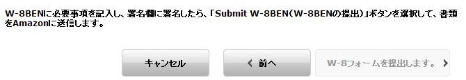
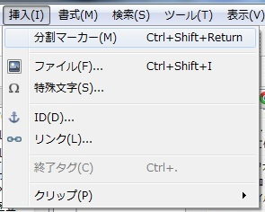
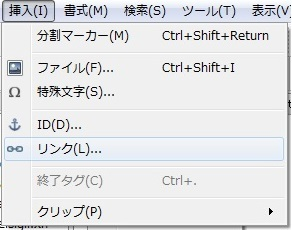
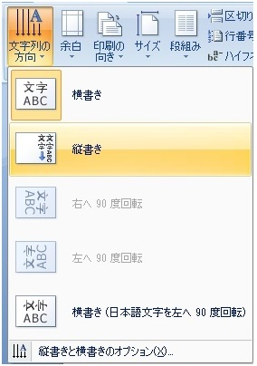

🏠
日
月
縦書き／横書き

弊社ではお客様のロイヤリティから所得税の源泉徴収は行っておりません。そのため、KDPで発生したロイヤリティにつきましては、お客様ご自身で日本で確定申告をしていただく必要がございますが、対象者、対象金額等、詳細につきましては、日本の税務署や税理士にご確認くださいますようお願いいたします。
-------------------------
microsoft office wordによる書籍作成
wordによるページの区切り設定
早速あなたの本を登録しよう！
| Kindle本自己出版-KDPの優しい手引き- | |
| 蓮見あつき | |
| (2014) | |
はじめに
本書では出来る限り優しくKindle Direct Publishing(キンドル・ダイレクト・パブリッシング)で自己出版を行う方法を解説しています。KDPって何？という０からの知識で読んで頂いても問題はありません。(※本書は2013年1月21日に初版が発売され、2014年3月に内容を更新すると共に、タイトルの変更を行わせて頂きました。2016年一部内容を追加させて頂きました。)
自己出版の方法を説明した後は、著者の個人的な思いや基本的なアドバイスを書いている部分があり、この点に関しては自己出版に必要な知識ではないので、必要の無い方は読み飛ばして頂いて構いませんが、何かしらあなたの役に立つと思います。
そういった内容も踏まえて全て読んで頂ければ幸いです。そしてこの本を読み終える頃には、あなたも電子書籍の作成が出来る様になっているはずです。
では「あなただけの物語」が読める日を楽しみにしています。
書籍は紙から電子の時代へ
過去、今までは自分で本を出版するとなると「自費出版」の方法しか無く、費用は数十万、高ければ数百万のお金が必要だった。
出来る本は数百冊、数千冊程度である。そしてそれを自分の手で売ったり、書店に営業を掛けて置かせてもらうなどが一般的な方法だ。だが時は経ち、時代は確実に変わりつつある。 書籍は紙から電子の時代へ、これにより自分で書いた本が大きな費用も必要無く、パソコンやインターネットを通じて「自費出版」出来る時代になったのだ。
費用を必要としないのでもう「自費出版」では無く「自己出版」と言えるだろう。 自己出版の電子書籍が実現されて来た中で、今後代表的なものとなるのが「Kindle Direct Publishing」だ。2012年12月に発売されたKindleは順調にシェアを伸ばしていて、電子書籍をリードしている。「Kindle Direct Publishing」はKindleストア、Amazonという巨大なマーケットで自由に自己出版が出来るのだ。 自己出版をするに当たって不安に思う事が多々あると思うが、以下のようなものだろう。
※自己出版と言えどパソコンを使うので難しいのでは？
※費用は掛からなくても専門知識は必要ではないか？
※電子書籍は本当に誰でも作れるものなのか？
最初の一歩は誰でも不安なものだが、パソコンさえあれば決して難しいものではない、むしろ簡単だ。 海外では既にベストセラー作家が生まれている、日本人だって語学が堪能な人間なら、英語の出版だって可能ではないか。 自分の作品が世界に簡単に公開出来る、素晴らしい世の中になった。 それでは電子書籍の作成方法、並びに公開まで説明していこう！
Kindle Direct Publishing(KDP)とは何か？
キンドル・ダイレクト・パブリッシングと読み、簡単に言ってしまえば自分の作った書籍をAmazonのKindleストアにて出版する事が出来るサービスだ。
何千、何万とアクセスがあるAmazonに自分の作品を並べられるなんて面白い話だと思う。もちろん利点はそれだけではない。 出版に掛かるコストは無料、日本だけでなく世界でも発売が出来る。原稿が既に出来ていれば、出版に掛かる時間ほとんど無い、基本48時間以内に審査が行われ問題なければそのまま販売される。
一般の書籍の印税は著者により変わり、７～１０％と言われているが、ＫＤＰならば３５％その利益は３倍以上だ。いくつかの条件があるものの、日本ならば70%のロイヤリティを希望する事も出来る。(詳細については後程説明する) KindleはiphoneやAndroid(スマートフォン)でもKindle専用のアプリで読む事が出来る、もちろんアプリは無料、自由にダウンロードが可能だ。
つまりスマートフォンならばKindleストアで本を買う事が出来るので、ユーザーはKindleユーザーだけでなく、iphoneやAndroidまで広がっているのだ。あなたが自己出版を志しているならば、KindleのKDPを利用しない手は無いだろう。 ではこれより一緒に自己出版の扉を開いていこう、差し支えなければ本書を読みながらまだの方はKDPに登録をして頂きたい。
え？ まだ心の準備が出来ていない？
そんな事を言っては乗り遅れてしまう、さあ直ぐに登録しよう！
Kindleのアカウントを作成する
では早速登録しよう！もしあなたが普段の買い物でAmazonを利用しているなら、既存のIDを利用すればそのままKindleのサービスにログインできる。
持ってないのであれば、アカウントの作成が必要になるのでhttp://kdp.amazon.co.jp/
から画面右上の【Amazonアカウントがありません】の下の「サインアップ」から登録をしてもらいたい。
登録用のメールアドレスを入力して、初めての利用を選んで欲しい。
その後はアドレスに届いたメールに従って登録、簡単だと思うのでAmazonの登録の説明は省かせて頂く。
アカウントの作成が終わった後は、早速Amazonのアカウントでログイン、まず一旦作品の事は置いておいて、今度はＫＤＰのアカウントの登録だ。名前、住所、電話番号などを登録。それが終わったら今度は自分の銀行口座の登録を行う必要がある。ここで初めて壁にぶち当たり「？」と思う事があるかも知れない、難しく考えずに進んで行こう。
ロイヤリティ口座の登録、手数料が一番安い銀行は？
銀行口座の登録と共に、本が売れた際にもらえるロイヤリティに関して把握しておこう。
Kindle本の売上に基づくロイヤリティとKDPセレクト基金からの分配金は、月末日を〆日として計算され、その60日後に支払いが行われる。
報酬の支払いの際、Amazonは米国の会社だから国際間電子取引になる。それは仕方ないのだが手数料はどの程度掛かるのだろうか？振込み手数料はAmazonが負担してくれるが、リフティングチャージ(と言った名称で呼ばれる手数料、銀行によって使い方が違う)という手数料が掛かる。
三菱東京ＵＦＪ銀行を例にどの程度掛かるのか調べて見よう。
著者は海外からの送金受取に関して無知だったので、三菱東京ＵＦＪ銀行に直接出向いて聞きに行った。「ロイヤリティは海外から日本円で、指定銀行に日本円にて支払われる。その際にまず海外被仕向手数料が1件付き1500円掛かる。※ちなみに送金額(またはその換算円貨額)が3000円未満の場合には、送金額(またはその換算円貨額)の半額となる。
そして更に「円為替取扱手数料」(送金金額の1/20％、最低2500円)※外貨取扱手数料、並びに円為替取扱手数料は、送金額(またはその換算円貨額)が3000円未満の場合は、無料になる。3000円以上8000円未満の場合は、送金額(またはその換算円貨額)の半額から1500円を差し引いた金額となる。」
想像以上に海外からの送金は手数料が高かった！これでは電子書籍の印税なんて殆ど残らないではないか！数百円の本の印税から、手数料で毎回4000円以上も引かれたら辛い...せめてロイヤリティがある程度貯まってから振り込んでもらえないか？とKDPのヘルプに質問をしてみた。
KDPとのやり取りをまとめた物を整理して下記に記して置く※2012/01/18調べ
---------------------------------
振込み額は日本円の場合1000円からとなる、振込金額の指定は出来ない。
だがある程度の額に達してから支払いを受け取りたいという希望がある場合、kdp-supportに支払いを止めるよう連絡を頂ければ1000円を超えても支払いを止めるようシステムに設定する事が出来る。
お客様側でお支払いが必要となった時は、支払いを止める設定を外すよう連絡を頂ければ、再度設定を行い、支払いを進める事が可能。
ただし、システムの仕組み上、KDPのアカウント情報を更新したり、保存ボタンをクリックすると、支払いを止めるフラッグが「自動的」に外れ、「自動的」にその時点で支払いがされてしまう。
もしKDPに支払いを止めるよう依頼をされる場合は、アカウント情報を最新の状態にアップデートし、上記注意事項を覚えて置く事。
----------------------------------
これは便利だ、金額の指定は出来ないが自分の判断で貯まるまで支払いをストップして貰えるのだ。但し自分のアカウント情報を更新してしまうと、自動的に支払い方法が戻ってしまい、1000円を超えてしまうと支払われてしまう。その点にだけ注意すれば、少しでも手数料を節約出来そうだ。是非覚えて置いて欲しい。
他の銀行を調べたのだが、結局殆どの銀行も手数料は同じようだ。それでも諦めきれず再度調べた所、「CITI Bank」と「新生銀行」では一部手数料が掛からない事がわかった。
新生銀行に電話して見た
自宅近辺に新生銀行が無かったので、新生銀行には電話で聞いてみた。
新生銀行では「海外から日本円で送金した場合、資金を日本円で受け取りが可能、手数料は掛かりません」とのお返事を頂いた。と言うことは海外被仕向手数料は無料と言う事だ。但しそれでも経由した銀行によってはリフティングチャージが掛かるとの事だ、だが他の銀行と比べたら安い事には間違いは無い。
口座維持手数料は無料なので、気軽に作れるのがメリットだ。
CITI Bankはどうなのか？
新生銀行と同じく手数料は掛かりませんとのこと。但しそれでも経由した銀行によってはリフティングチャージが掛かる、だが他の銀行と比べたら安い事には間違いは無い。だが新生銀行と違ってシティバンクは口座維持手数料が掛かる、月額2,100円（税込み）毎月第1営業日に支払わなければならない。
ただし以下のいずれかの条件を満たせば口座維持手数料は無料だ。
・前月の月間平均総取引残高の外貨部分が20万円相当額以上。または月間平均総取引残高が50万円相当額以上
・住宅ローン（不動産担保ローンを含む）またはパーソナルローン（無担保）の借入れがある事など
・アドバンスマネーまたはカードローンの月間平均借入残高が4円以上
・25日（25日が土・日・祝休日の場合は前営業日）時点で指定のシティカード（クレジットカード）のゴールドカードまたはプラチナカード会員で、そのカード決済口座として当行の口座を指定していること。25日（25日が土・日・祝休日の場合は前営業日）時点でシティバンク銀行のクレジットカード会員である場合（シティカードジャパン株式会社発行)
※情報が変わる場合もある為、必ずご自身でCITI Bankに確認を取って頂きたい。
少しでも安く済ませたいのならCITI Bank、新生銀行の2つの中から使用する銀行を決めよう。それと振込の支払いをストップさせて置くと良いかもしれない、ある程度貯まってから受取るのが良さそうだ。※著者調べなので、他にも良い銀行があるかも知れない事をお忘れなく。
追記※ロイヤリティ振り込みに関して
私は新生銀行を使用してみたが、振り込み手数料は掛からなかった。実体験では新生銀行をお勧めする。
だが2016年現在、ネット上で調べたところ、他の銀行でも掛からなかった方もいるようだ。
KDPのヘルプのページを見ると「実際に手数料が発生するかどうかは、お客様の取引銀行とのご契約内容にもよるため、直接取引銀行へご相談されることをお勧めします。」と明記されており、明確な記載が無い状態だ。 著者自身の実体験では、新生銀行は手数料が掛からなかったが、他の銀行では試していないのでご了承頂きたい。
尚、2013年12月16日より、電子資金振替（EFT）でのロイヤリティ受取を希望されている方に関しては「最低支払い金額」に達していなくても、ロイヤリティ発生月の末日から60日後、ロイヤリティの受取が可能になる。(ロイヤリティ支払いで「電子資金振替（EFT）」を選択している場合に限る)
但し「Amazon.com.br」での販売で発生したロイヤリティに関しては、これまでどおり最低支払い金額が設定されている。
$100/￡100/～など。小切手の場合は最低支払い金額が決まっていることに変更は無いようだ。
米国の源泉税率は30％、更に日本で引かれるのか
さて口座の登録が終わったら、ロイヤリティに関して再確認をしてみよう。報酬の支払いの際に税金が掛かるのは当然だが、そのまま受取ると米国の源泉税率30%引かれてしまう。
だがこれは過去の話で、日本国内の本の販売に関しては米国源泉税が引かれることはなくなった。ただし、米国で売れた本に関しては30%の税率が引かれる。あなたが日本国内のみをターゲットに本を出すのであれば、無理に申請する必要性はない。
ただ世界をターゲットにしたいのであれば話は別だ。日本在住のあなたが英語の本を出して米国で売れたとしても、ロイヤリティは米国からの支払いになる、なんの手続きもしなければ30%の税率が引かれる上に、日本でも税金が引かれる二重課税になるのだ。
税金が30%も！日本に住んでるのに何故だ！と思うかも知れないが、内国歳入庁 (IRS) に適切な申請を行えば免除してもらう事が出来る。
申請をしなければKDPのロイヤリティ料率は35%でなく実質24.5%まで減ってしまうし、70％を選んでも実質49％の計算になる、本来支払う必要の無い税金なので必ず免除の申請を行おう。
内国歳入庁 (IRS) に適切な申請を行うと、米国の源泉徴収は免除となるので、早速申請に関して調べてみよう。
内国歳入庁 (IRS) に適切な申請を行うと、源泉徴収は免除
すぐにしなければ！だけど内国歳入庁(IRS)ってなんだ？！ここでまた壁にぶつかってしまった。KDPのヘルプを参照して下さいなどで、他のKindle出版のノウハウでは説明を省いているのも多いかもしれない、ここは諦めて課税されるしかないのだろうか...。だが私は大切なロイヤリティを少しでも増やす為に、ここは避けて通りたくない。
この壁を乗り越え、租税条約上の便益を受けるためには、有効な米国納税者番号を取得する必要がある。
日本と米国の間には租税条約(そぜいじょうやく)と言うものがあり、簡潔に言えば租税条約とは二重課税の排除と、脱税の防止などを目的として作られている物である。つまり日本に住んでて、日本で源泉税払ってるなら申請して下さいね、租税条約に基づいて米国の源泉徴収はされませんよ、と捉えて良い訳だ。だがその為にはそれを証明して下さいね、と言うお話なのだ。
では米国納税者番号を取得する為の書類を用意しよう、これがそのSS-4の書類だ。
こちらのURLから書類をダウンロードできる。http://www.irs.gov/pub/irs-pdf/fss4.pdf
(本書発売時のURLの為、必ず最新の情報を確認して頂く様お願いします)
URLからダウンロード後、印刷をして手元に置きながら本書を読むと分かり易いだろう。このIRSフォームSS-4(雇用者番号 (EIN) の申請)の書類を完成させてIRSに提出する必要があるのだ。
IRSフォームSS-4まるで何かの拳銃や兵器のネーム番号に感じる...著者の私はそれくらい英語が苦手なのだが、何とかあなたと一緒に頑張ろうと思う。
IRSフォームSS-4 「雇用者番号 (EIN) の申請」
IRSフォームSS-4の書類をダウンロードしよう
http://www.irs.gov/pub/irs-pdf/fss4.pdf
(本書発売時のURLの為、必ず最新の情報を確認して頂く様お願いします)
KDPのヘルプに書き方は書いてあるのだが、なるべくここでは簡潔に説明する。
尚、この書類はPDFというファイルで出来ているので、万が一開けないという方が居たらインターネット上でPDF用のフリーソフトをインストールして頂きたい、そうすれば閲覧が出来る様になる、お勧めはAdobe Readerだ。このPDFは3ページあると思うが、あなたが記入するのは2ページ目のみで良い。
上から順番に数字がふってあるのがわかるだろうか？
全て読んで理解する必要は無いので、必要な項目だけ解説する。必要の無い項目に関しては触れないのでご了承願いたい。
Type or print clearly.
【1】
Legal name of entity(or individual) for whom the EIN is being requested
雇用者番号を求める名義を記入
【2】
Trade name of business
iBooksなどで販売を考えているのであれば、ここにペンネームやサークル名などを入れればTrade name of busineとして設定できる。Sellerの申請の際にこのTrade name of businessを利用すれば本名を表示させずに本の出版が可能だ。忘れてしまうとiBooksで出版する際本名が表示される事になる。なお、KDPではデフォルトで作家名で表示が可能なので安心してほしい。(2016年12月)
【4a】
Mailing address(room,apt.,suite no.and street,or P.O.box)
郵送先住所(番地、通り、アパート名、部屋番号、など)
【4b】
City, state, and ZIP code(if foreign,see instructions)
市町村区、都道府県、郵便番号
【6】
County and state where principal business is located
業務活動を主に行う国(Japan)
【7a】
Name of responsible party
責任者の名前
【7b】 SSN,ITIN,or EIN
EINの取得をしたいのだから、「EIN」と記入しよう。
【8a】
Is this applincation for a limited liability company(LLC)(or a foreign equivalent)?
8aは有限責任会社の為の申請ですか？と言う質問なので、個人の場合はいいえなので「NO」にチェックで良い。
【9a】
Type of entity(check only one box).Caution.lf 8a is ''Yes'' see the instructions for the correct box check.
法人の種類を聞かれているのでSole proprietor(個人事業主)にチェックを入れる...とKDPのヘルプに書いてあるが、実はこれでは不親切のようだ。念の為Other(specify)にチェックを入れ「Japanese sole proprietor」と入力して置こう。
【10】
Reason for applying(Check only one box)
ここでは二つにチェックを入れるとKDPのヘルプに有るが、英語で「一つにチェックを入れて下さい」と書いてあるので
「Other(specify)」にチェックを入れ、⇒の矢印の空白に英語で次の文章を入力して欲しい。
入力する文章は「To obtain a reduction of withholding imposed by section 1441 pursuant to an income tax treaty.」(訳＝所得税に関する租税条約に基づいて、セクション1441で課せられた源泉徴収税を軽減するため。)これで良い。
【11】
Date business started or acquired (month,day,year).See instructions.
いつからやってるの？って聞いてるのであなたがビジネスを始めた日を入力しよう。私は申請の一ヶ月前からしている事にした。2012年12月30日でDecember 30, 2012と入力した。
【12】
Closing month of accounting year
会計年度の月は？と聞いてるので、個人事業主なので12月だから「December」と入力
【16】
Check one box that best describes the principal activity of your business.
あなたが行っている業務で、該当するものにチェックを入れて下さい。との事なのでManufacturing(製造)にチェックを入れて置こう。
【17】
Indicate principal line of merchandise sold, specific construction work done, products produced, or services provided.
提供するサービス、あなたは何をするのか？提供済みの主力商品やサービスのラインナップは？見たいな事を聞かれている。なのでここでは「Digital book」と記入して置こう。
【18】
Has the applicant entity shown on line 1 ever applied for and received an EIN?
ここでは今まであなた(申込者)はEINの申請・取得した事があるか？と聞いているので、当然初めてなのだから【No】にチェックを入れよう
そして下の方の「Name and Title(type or print clearly)」にローマ字で名前を記入
最後に、虚偽の申請ではなく、自分の知る限り正確に記入したと言う証明のサイン【Signnature】にあなたの名前(サイン)と署名日を記入で終了だ！FAXを持っている方は右下のApplicant's fax number (include area code)に自分の家のファックス番号を入力しよう、日本なので＋81を付けて頭の0を省略して書くのを忘れずに。(例03-1234-5678の場合は、+81-3-1234-5678だ)
完成したら早速申請しよう！
メンドクサイ！そんなあなたの為にss-4テンプレートを用意
記入するのが面倒だ、と言う方の為に最低限記入済みのss-4テンプレートを用意した。ダウンロードURLはこちらだ。http://kindlejiko.futene.net/ss-4tenpure.pdf
Adobe Readerと言うもので作成されているので、一部ソフトでは読み込めない事をご了承頂きたい。
これであなたが記入する必要があるものは下記だけになる。
【1】
Legal name of entity(or individual) for whom the EIN is being requested
雇用者番号を求める名義を記入(あなたの名前を入力)
【4a】
Mailing address(room,apt.,suite no.and street,or P.O.box)
郵送先住所(番地、通り、アパート名、部屋番号、など)
【4b】
City, state, and ZIP code(if foreign,see instructions)
市町村区、都道府県、郵便番号
【6】
County and state where principal business is located
業務活動を主に行う国
【7a】
Name of responsible party
責任者の名前(あなたの名前を入力)
ここまでは必ずローマ字で入力するようにして下さい。
そして下の方の「Name and Title(type or print clearly)」にローマ字で名前を記入
最後に【Signnature】にあなたの名前(サイン、漢字名です)、右側に署名日を記入するのを忘れないように！FAXを持っている方は右下のApplicant's fax number (include area code)に自分の家のファックス番号を入力しよう、日本なので＋81を付けて頭の0を省略して書くのを忘れずに。(例03-1234-5678の場合は、+81-3-1234-5678だ)
これで書類は完成！
ネット、手書き、英語が話せる、それぞれの手続き方法
デジタルなやり方
PDF編集ソフトで、先程の説明に従って入力するだけで問題ない。まず完成したのを確認後、印刷をしてサインに直筆で署名する。その後はそのままパソコンでFAXしてしまえば完了。
2016年12月時点、FAX送信先は「シンシナティ」と呼ばれるところで、FAX番号は日本から送る場合「304-707-9471」なので間違えないようにしよう。
※事務所が移転する場合があるので、最新の情報をチェックするようにしてください。IRSのホームページはこちらです。http://www.irs.gov/uac/Where-to-File-Your-Taxes--(for-Form-SS-4)
今はパソコンを使ってFAXが出来るので、自宅にFAXが無いという方も気軽に送信出来る。
アナログなやり方
自宅に固定電話が無い私は、ネット上でフリーで送れるFAXサービスを探していたのだが、問題がありそうなので止めて置いた。とは言えこの手続きの為だけにFAXを導入するのも...と思いコンビニから送った。その為まず書類を一度印刷し、記入漏れないが無いかをチェック、コンビニまで出かけてFAXを送信。
PDFソフトで上手く書類を作ることが出来なかった方は、大変かもしれないが印刷したものに直接記入をしてFAXしよう。
直接手書きで記入したものは「字が読めなかった」などの理由から、届いても向こうで破棄されてしまう事があるので、手書きの場合は「全て大文字で書いた書類」「普通に書いた書類」2種類を作り、念の為に2枚送る方が良いだろう。なるべくPDFソフトを使いこなせるようになり、完成したものを印刷出来るように頑張って欲しい。
FAXでの返答は2～3週間前後、郵送だと約一ヶ月前後掛かる。(私はFAX番号を書類に記載した上で送信したが、FAXではなく郵送で直接届いた。FAXで届いたという人間も居るとのことだが、担当員によって個人差があるようだ。)
申請して一ヶ月以上経っても何も送られて来ない場合は、不備があり破棄されている可能性がある。再度申請をやり直した方が良いかも知れないので注意が必要だ。
著者がIRSから書類を受取るまでの流れ
参考までに私がIRSからEINの書類を受取るまでの流れを記載しておこう、テンプレート通りに書類を作り2013年1月16日にFAX、同年2月13日に郵送にてIRSから番号が記載された書類(写真の物)が届いた。※黒く塗りつぶされている部分に自分の住所が記載されている。
書類の中にEIN番号が記載されているので、大切に保管しておくことをお勧めする。ちなみに発行の日付は英語で2月5日と書いてあったので、発行されるまで2週間前後、郵送されるまで2週間前後の計算と考えて良いだろう。担当する事務員によって変わると思われるが、どちらにせよ申請は早めにする事をお勧めする。
英語が喋れる場合
電話の場合、その場でEINを取得することが可能だ。もしあなたが英語が分かるのであれば話は簡単になる。
問い合わせ先: 1 (267) 941-1099なので直接連絡して見て欲しい。英語が喋れる方なら質問や手続きは容易いだろう、その際は手元にSS-4の書類を用意して、書類を見ながら話すせばスムーズにことが進むはずだ。
尚、国際電話の為、それなりの料金が掛かる事を忘れないように。
W8-BEN「米国の源泉徴収に関する受益者の外国でのステータスの証明」をAmazonに送ろう
Amazonに提出するW8-BENの書類はこれだ。*書類形式は2006年のものになる、最新のものに関しては記載されていないのでご了承願いたい。
2014年よりKDPにログイン後、ネット上からW8-BENの申請
ができるようになった。ネット上でのやり方は後ほど説明させて頂く。
まずは知識を深めるためにも、郵送で申し込む場合の手続き方法を説明しよう。
こちらのURLから書類をダウンロードできる。http://www.irs.gov/pub/irs-pdf/fw8ben.pdf
(本書発売時のURLの為、必ず最新の情報を確認して頂く様お願いします)URLからダウンロード後、印刷をして手元に置きながら本書を読むと分かり易いだろう。ではこちらでもSS-4のように記入する必要の物だけ説明していこう。
【1】
Name of individual or organization that is the beneficial owner
ここにはあなたの名前を入力
【2】
Country of incorporation or organization
Japanと入力しよう。
【3】
Type of beneficial owner
「Corporation」にチェックを入れよう。
【4】
Permanent residence address (street, apt. or suite no., or rural route). Do not use a P.O. box or in-care-of address.
現住所を入力（番地、通り、アパート名、部屋番号など）
【4の下】
City or town, state or province. Include postal code where appropriate.
市町村区、都道府県、郵便番号を入力しよう
【その右】
Country (do not abbreviate)
ここにもJapanと入力しよう。
【6】
U.S. taxpayer identification number, if required (see instructions)
ここに取得したEIN番号を入力、忘れずにEINにチェックを入れよう。
【9】
I certify that (check all that apply)
aにチェックを入れて「Japan」と入力、bとcにもチェックを入れよう。そして書類の一番下の【Sign Here】にあなたのサインを書く、その隣のDateに日付(2013年2月1日ならFebruar/01/2013)、Capacity in which actingの上には「CEO」と入力！
これで書類は完成だ。
メンドクサイ！あなたの為にW8-BENテンプレートを用意
メンドクサイ！そんなあなたの為にW8-BENのテンプレートも用意してある。記入するのが面倒だ、と言う方の為に最低限記入済みのW8-BENテンプレートを用意した。
ダウンロードURLはこちら
Adobe Readerと言うもので作成されているので、一部ソフトでは読み込めない事をご了承頂きたい。このファイルが使えるなら、あなたが記入するのは下記だけで良い。
【1】
Name of individual or organization that is the beneficial owner
ここにはあなたの名前を入力
【4】
Permanent residence address (street, apt. or suite no., or rural route). Do not use a P.O. box or in-care-of address.
現住所を入力（番地、通り、アパート名、部屋番号など）
【4の下】
City or town, state or province. Include postal code where appropriate.
市町村区、都道府県、郵便番号を入力しよう
【6】
U.S. taxpayer identification number, if required (see instructions)
ここに取得したEIN番号を入力、忘れずにEINにチェックを入れよう。そして書類の一番下の【Sign Here】にあなたのサインを書く、その隣のDateに日付(2013年2月1日ならFebruar/01/2013)、Capacity in which actingの上には「CEO」と入力！
これで書類は完成する。
2014年3月現在の送付先は下記
Amazon
Attn: Vendor Maintenance
PO Box 80683
Seattle, WA
98108-0683
U.S.A.
最新の送付先住所はKDPのヘルプから確認出来る。https://kdp.amazon.co.jp/help?topicId=201274750&ref_=kdp_AC_TAX_tih#review-w8
封筒の隅に大きく赤いペン等で「Air mail」と書いた方が良いだろう。
W8-BENはもうネット上からが良い
著者である私自身がW8-BENの手続きをしたときは、郵送でしか受け付けていませんでした。ですが2014年5月現在、インターネット上からW8-BENの手続きが可能になっています。Amazon側も郵送よりはネット上で手続きをして欲しいようです。というのもKDPのサービスが日本で始まったことにより、W8-BENの手続きする人間が増え、郵送では手が追いつかなくなったと考えられます。続いてはネットでW8-BENの手続き方法に関して記載したいと思います。
ネット上でW8-BENの申請を行う
先ほどの例では郵送でW8-BENの申請を行う方法に関して説明しましたが、次はネット上で行う方法に関して説明します。まず、Amazonアカウントにログイン後、画面右上の○○(自分の名前)のアカウントをクリックしてアカウント情報のページに飛んでください。
アカウント情報に移動した後、「税に関する情報」の下にある「税に関する情報を登録する」をクリックします。
ボタンをクリック後、税に関する質問に答えていくだけで、自動的にW8benの書類が作成され、そのままネット上で申請が可能です。ネット上で申請を行えば、紙の書類を郵送する必要はありません。実際に操作を進めていきましょう、まずクリックを行います。
続行のボタンを押すと、「電子署名を提供する」同意を求められるので、問題が無ければ「はい」を選択して進んでください。
ここで重要なのは「電子署名を提供する事に同意すること」と、「非米国居住者である」ことを選択することです。(米国居住者の方に関しては、本書では解説しておりません)また、EINを提出する際は「個人」ではなく日本語で言う個人事業主の「みなし事業体」を選択してください。
日本在住で個人の方は「いいえ」を選択して続行を押しましょう。進んでいくと所在地の入力を求められます。
ローマ字で入力を行ってください。氏名、住所など入力に間違いのないように気をつけましょう。
米国以外の納税者番号を求められますが、任意指定のため入力する必要はありません。わからない場合も飛ばしてしまって大丈夫のようです。
当てはまる場合のみチェックを入れます。当てはまるものが無ければ全て無視して続行を押して問題ありません。
TINを持っていますか？の質問を受けたら、ss-4の申請で手に入れたEIN番号の入力を行いましょう。ここでは「はい」を選択して続行を押します。
間違いのないように、自分のEIN番号を入力して続行を押してください。米国で事業や経営を行っているか？どこの国の人ですか？などの質問に答えた後、最後の確認画面に進みます。
見覚えのある書面ですね、このまま電子書面としてAmazonに提出が可能なわけです。そして確認を押すと、書面に間違いはないか？などの最終確認を求められます。
「あなたはあなたの知る限り、提出書面の内容は真実であり、嘘や偽りはありません」これに同意し、フルネームを記入して、日付を確認。Eメールアドレスを入力後、署名者の資格の中から自分に当てはまるものを選択してクリック。

最後に「W-8フォームを提出します。」をクリックして進んでいけば終了！時間が掛かりましたがお疲れ様でした！
問題が無く受理されれば、上記の画像のように「源泉徴収率0%」と表示されるようになります。こうすれば米国の源泉税率30％を回避することができるようになります。これでロイヤリティから引かれることはなくなります。
日本の源泉税に関して
米国の源泉税に関しては免除できたが、日本の源泉税に関してはどうなっているのか？KDPのサポートセンターに問い合わせてみた。以下、その際のやり取りを記載します。
----問い合わせ内容----
KDPサポート担当者様、いつもお世話になっております。 所得税に関しての質問なのですが、KDPから支払われるロイヤリティは日本の所得税は引かれているのでしょうか？会社からの給料などは所得税を引かれて支払われると思いますが、KDPのサービスですとどういった形になりますでしょうか？ 宜しくお願い致します。
----KDPより回答----
Kindle ダイレクト・パブリッシングにお問い合わせいただき、ありがとうございます。
弊社ではお客様のロイヤリティから所得税の源泉徴収は行っておりません。そのため、KDPで発生したロイヤリティにつきましては、お客様ご自身で日本で確定申告をしていただく必要がございますが、対象者、対象金額等、詳細につきましては、日本の税務署や税理士にご確認くださいますようお願いいたします。
-------------------------
KDPからの回答は以上になります。当たり前と言えば当たり前ですが、日本には税金を納める必要があります。日本の法律に従って、税務署に別途相談する必要がありそうです。
税金を納めるというと、思い浮かぶのが確定申告です。給与所得者で確定申告が必要な人の条件は、代表的なものだと下記になります。
1.年間の給料収入金額が2,000万円を超える場合
2.1か所から給与の支払を受けている、給与所得及び退職所得以外の所得の金額の合計額が20万円を超える場合
3.2か所以上から給与の支払を受けている、主たる給与以外の給与の収入金額と給与所得及び退職所得以外の所得の金額の合計額が20万円を超える場合
この条件を見る限り、ロイヤリティが20万円を超えなければ申請が必要なく思います。著者のケースですが、直接電話で問い合わせたところ、20万円を超えてなければ申告する必要はないですよと言われました。（私自身、ロイヤリティが20万円も無いので...） 但し、細かい他の条件もあるようなので、ご自身でご確認ください。
参考までに日本の国税局のHPを載せておきます。
国税庁：給与所得者で確定申告が必要な人
W8-BEN提出後、Amazonからの返事に関して
私のケースで説明させて頂くと、「米国の源泉徴収に関する受益者の外国でのステータスの証明」に必要なW8-BENを2013年2月14日にエアメールで送り、無事に受理された。
私がIRSからEINの書類を受取るまでの流れだが、テンプレート通りに書類を作り2013年1月16日にFAX、同年2月13日に郵送にてIRSから番号が記載された書類が届いた。その後2月14日にW8-BENのテンプレートを使って、Amazonにエアメールを発送、そして無事受理されAmazon側からメールにて連絡を頂いた。以下、Amazonからのメールを記載する。
---------------------
(Japanese follows English)
Thank you for submitting your W-8BEN. Your withholding rate is set at 0% and we are retaining the original form on our files. Please remember to submit a new form if your information changes. If you have any questions, please let us know.
いつも大変お世話になっております。先日はW-8BENをご提出いただきありがとうございます。御社の源泉徴収率は0%に設定されました。原本は弊社にて保管させていただきます。なお、御社の詳細に変更が発生した場合は、改めてW-8BENをご提出いただく必要がありますのでどうぞご留意下さい。ご不明な点がありましたらご連絡お願い致します。
今後ともどうぞ宜しくお願い致します。
---------------------
というわけで問題なくKindle、KDP免税関係の全ての手続きが終了した。3月13日にメールで返事をもらったが、W8-BENも一ヶ月掛かったので、米国の源泉税率の免除まで合計2ヶ月は掛かると考えた方が良いだろう。ロイヤリティが振り込まれる前に、手続きを済ませた方が良い。米国が免税を認めてくれているのに、それを知らずに30%も源泉税を払う必要は無い、しっかりと手続きしておこう。
尚、これだけ時間が掛かったのは書類を郵送で送ったためと思われ、ネット上で申請を行った人はこれよりは早いかもしれません。
ロイヤリティ(印税)を35％にするか70％にするか
基本的なロイヤリティは以前は35％のみだったが、70%を選択出来るようになった。但しそれには条件があるので忘れずに確認しておいてほしい。
ロイヤリティ70％の条件
以前は海外でしか70％のロイヤリティ指定は出来なかったのだが、今は日本でも海外と同様のロイヤリティ70％も選択する事が出来るようになっている、一般の紙の書籍より印税が7～10倍も高い！但しこの場合あなたの作品がKDPセレクトに登録される事が条件で、他の電子書籍のサイト等では販売してはいけない。
専属契約をイメージすれば分かりやすいだろう、ＫＤＰ以外の所で発売しちゃ駄目だよ！と言う事だ。
またAmazonプライム会員にレンタルされる事を合わせて条件に入っている。レンタル料は支払われるがその料金は毎回変動し、あなたの作品がどの程度レンタルされたかでまた変わる。それと最後にもう１点、ダウンロードされた際の配信コストが差し引かれてしまうのを忘れずに。個人的にはそれでも70％を選択した方が得だとお勧めしておく。
ロイヤリティ35％のメリット
配信コストはAmazonが持ってくれる、KDPセレクトに登録をしていなければ、プライム会員にレンタルされる事は無い。ただそれ以外のメリットが余り思い浮かばないので、どちらにするかはご自身で決めて頂きたい。
配信コストに関して
電子書籍ファイルのメガバイト数が、配信コストの金額になる。
Amazon.co.jp: ¥1/MB
Amazon.com: US $0.15/MB
インド Amazon.com: INR ₹7/MB
Amazon.ca: CAD $0.15/MB
ブラジル: BRL R$0.30/MB
Amazon.co.uk: UK £0.10/MB
Amazon.de: €0.12/MB
Amazon.fr: €0.12/MB
Amazon.es: 0,12 /MB
Amazon.it: 0,12 /MB
Amazon.com.mx: MXN $1/MB
Amazon.com.au: AUD $0,15/MB
ちなみにファイルサイズの端数は近い方の数字に切り上げられる、電子書籍の最低配信コストは、サイズに関係なく日本円での販売については¥1だ。
この金額に関しては2014年3月調べなので、最新の情報はKDPからチェックして欲しい。
本の価格設定に関して
価格設定に関してだが、決められた最低金額～最高金額の範囲内で希望小売価格を設定する必要がある。10円の本を販売したい、10万円の本を販売したい、など極端な値段の設定は不可能となっている。また、希望したロイヤリティによって本に付けられる値段が変わるので覚えて置くと良いだろう。本の最安値の設定は「99円」が限界で、本のデータ要領にも左右される。また、この場合ロイヤリティは自動的に35％に設定されてしまう。
70％のロイヤリティにするには最低でも「250円」の価格設定が必要なので覚えておいてください。(2014年3月調べ)
テキストファイルだけでも出版は可能
さて、ここからは電子書籍の作成に関して説明していこう。手軽に出版したい！難しいことはなるべく避けたい！そんな方にはテキストファイルでの作成をお勧めする。「テキストファイルだけで出版できるの？」と疑問に思う方も居るかもしれないが可能だ。
技術者の方が好意で、テキストファイルをEPUB(イーパブ)に変換できるサービスを公開している。その一つ「でんでんコンバーター」などが手軽に利用できる。※EPUBは「イーパブ」と読み、電子書籍の規格の一つであり、オープン性や単純性の理由から普及数が多く、英語圏では電子書籍として標準規格と言えるほどになっている。EPUB形式で作成しておけば、KDPに限らず他の媒体で出版する際に応用が利くと言えるだろう。
でんでんコンバーター
EPUB3::かんたん電子書籍作成
GenEPUB.com テキストから電子書籍EPUB生成
http://genepub.com/
※こちらは横書きにしか対応していないようです。
利用は無料のようです、開発者の方には頭が下がります。特に短編の小説、エッセイなどを書きたい方には手頃で良いと思います。
テキストファイルの注意点
テキストファイルの使い方の解説なんて要らないだろう･･･とも思ったのだが、注意点があるので説明しておこう。EPUB作成に置いて共通しているのかも知れないが、ファイル名に日本語を使うとエラーが出ることが多い。作品をアップロードする際や、EPUB変換を行う際は必ずファイル名をローマ字や英語にしておこう。
EPUBを自分で作りたい！自分で作った方が作品を細かく管理できて良い！そんな方には是非SigilとWordでの作成方法を学んで頂きたい。次はフリーソフトのSigilでのEPUB作成に関して説明しよう。
Sigilを使ってEPUB形式の書籍を作成する
ここではフリーソフトの「Sigil」を使ったEPUB形式の書籍を作成する。EPUBはイーパブと読み、電子書籍の規格の一つでありオープン性や単純性の理由から普及数が多く、英語圏では電子書籍として標準規格と言えるほどになっている。
KDPでもEPUBのファイルをアップロードする事が出来るので、今回はEPUB形式で作成していく流れで説明しよう。
EPUB作製の為にソフトをダウンロードしよう、お勧めのソフトは「Sigil」だ。
「Sigil」のダウンロード先はこちらhttp://code.google.com/p/sigil/
本書ではVer0.7.2の物になるのでご了承ください。
画面左下の方にある「Featured」の中からソフトをダウンロードしよう。
あなたが当てはまる環境の物をダウンロードする事、私はSigil-0.7.2-Windows-Setup.exeをダウンロードした。「Sigil」は英語のソフトだが一部日本語に対応してくれている。最初はとっつき難いかも知れないが、ソフトにお金を掛けたくない人は使って見て欲しい。
インストールの方法は簡単だ、文章は英語で難しそうに感じるかもしれないが、基本的に「Next」を押していきInstallまで行けば終了だ。デスクトップに「Sigil」のショートカットが出来ていると思うので起動しよう、無ければプログラム一覧から起動させて欲しい。
では世界に一冊、あなたの本を作成していこう！
Sigilを起動
ではここでは既にあなたの原稿は出来ていると言う過程で進めさせて頂く、原稿が出来ている方は説明に従って入力していって欲しい。まだの方は覚えておけば作成の時に役に立つはずだ。
まず初めに本の内容、概要に関して登録しよう。本のタイトルや著者情報を登録する為に「ツール」からメタデータエディターをクリック
私のこの本を例に入力するとこうなる。
後は好みで「追加(基本)」から自分が必要だと思うものを入力して足して行くだけで良い。
Sigilを使った文章入力
デフォルトで「Section0001」というページが出来ていると思うが、右クリックから名前を変更できる。
新しいページを作りたい場合は「空のHTMLファイルを追加」をクリックすれば白紙のページができて、後は普通のワープロのソフトの様に文章を打ち込んでいけば簡単にページが作成可能だ。（ファイル名に日本語を使うとエラーが出る場合があるので、ローマ字で入力して欲しい）
また、文章の下に線を入れたい場合は「挿入」から「分割マーカー」を選択。

見出しなどで使えそうだ、複雑な操作をすることなく見栄えも良くなって来た。
Sigilの文章の中にリンクを貼る
Sigilの文章から特定のページに飛ばしたり、外部のホームページに飛ばしたい場合「リンク」の設定が必要になる。

「挿入」から「リンク」をクリック、目次に設定した文章などが一覧で出てくるので、飛ばしたい場所に設定する。一部不要な文章が入力されてしまうかもしれないが、必要な部分以外は削除して問題ないので、削除してしまおう。外部へのリンクを作成したい場合は「ターゲット」に直接リンクを入力すれば出来る、そのままだとURL表示になっているが、文章は変えても問題ないので自由に変更しよう。
例：説明の後にURLを書く
蓮見あつきのブログ
例：そのままURLを反映
以上だ、参考になれば幸いである。
Sigilで目次を作る
操作性から戸惑う人も多いと思うが、Sigilで目次を作るのは実は簡単だ。
「h1,h2,h3,h4,h5,h6」Headingと言うのがある、これは目次をレベル分け出来る便利な機能だ。
まず目次にするタイトルの文章を選択、その後画面左上のボタンを押す。
文字のサイズが変わり、ここで自動的にSigilがこのページを目次として認識してくれる。
だが表記させる為には一度ツールから「目次」の「目次を生成」を選択し、目次の設定を行わなければならない。
「目次を生成」を選択したら、先程目次として設定したものが出てくるはず。それに「含める」にチェックを入れて「OK」を押せば、目次に反映されるはずだ。少しずつあなたの作品が形になってきたのではないだろうか？続いてはmicrosoft office word(Ver.2007)を使って書籍作成をしてみよう。
SigilでHTMLの目次を作成する
先ほど目次の設定をしたが、電子書籍を購入された方の電子書籍リーダーによっては目次が反映されない場合がある。念の為、HTML（ページの目次）の目次も作成することをお勧めします。作成の方法は簡単で、先ほど目次を生成した場所の下に「HTMLの目次を作成」という項目がある。
それをクリックすると「TOC」というHTMLの目次が自動生成される。これでどの電子書籍リーダーを使ってる人でも、目次を使用することができるようになるので、忘れずに設定を行っておこう。
Sigilに表紙を表示させる
本の表紙を表示させる為に、Sigilに画像を読み込ませて置く必要がある。まずは画像の保存方法を説明しよう。
上の画像を参考に、画面左のブックブラウザーから「Images」を右クリックして「既存のファイルを追加」を選び、画像を保存しよう。表紙だけでなく文章中に使用したい画像の保存場所も一緒なので覚えて置くようお願いしたい。そして「Images」の中にあなたが指定した画像が追加されていれば完了。
表紙として指定するには「セマンティクスを追加」「表紙の画像」を選択する、追加された物を右クリックして最後にチェックを入れるだけで表紙は完成だ。
また、「ツール」の中から「表紙を追加」を選択すれば、自動で表紙のページを作成してくれる。できれば両方行っておこう。画像を保存する際はエラーを防ぐ為に、ファイル名は日本語を使用せずにローマ字で保存するように心掛けておくと良い。
Sigilのまとめ
ここでSigilの基本的な操作をまとめておこう。
・本の内容や概要を作る方法
・文章の入力や目次の作り方
・URL、リンク先の作成方法
・表紙及び画像の保存方法や挿入方法
これだけ基本を抑えて置けば、問題なく本を作成出来る筈だ。残念ながらSigilではデフォルトで縦書きに対応していない、強引に縦書きで表示させる方法も無くもないが、読む側によって左右されるので控えた方が良いと個人的に思っている。
縦書きに対応しているソフトは有料の物が多く、どれにするかは全て個人の好みによるのでここでは特定の物は勧めないでおく。
例え縦書きのソフトを使うにしても、上記の様な要点を押さえて置けば比較的簡単に作れるはずだ。物足りなくなったら少しずつ専門的な事を勉強していけば良い、一番大切なのは少しでも覚える事で、それが先に繋がっていくと思う。
本書を読んだ事で「電子書籍の作成って意外と簡単なんだな～」と思ってもらえれば嬉しい。
それと作成の最後に、文字のチェック、起動のテストなどを忘れないようにしよう。ファイル名には日本語を使わずにローマ字を使うようにして欲しい。例えば画像だったらgazouのようにローマ字での保存を心掛けよう、日本語ではエラーが出やすいので注意が必要だ。
microsoft office wordによる書籍作成
先程はSigilによるEPUB形式での作成方法を紹介したが、次はmicrosoft office word(Ver.2007)を使ってKDP用に書籍を作成しよう。
KDPでは試験的に.docxでの出版も対応している。私自身もwordを使って「インターネットのシロサギ達」と言う本を縦書きで自己出版しているので、普段からwordを使っている方なら一番楽、かつ手軽に自己出版できるのではないだろうか？
Wordを持っているが、全く使った事がないという方の為に簡単な文書作成の方法、並びにKDPへアップロードするまでの過程を解説させて頂こう。
Wordによる文書作成
まず新規作成から白紙のページを作成
Wordを起動後、画面左上にある「officeボタン」を押せば「新規作成」や「保存」「最近使用したドキュメント」等が表示される。
本書を例に文書作成をして行こう。最初に「はじめに」という文章を打ち込んでみた。
１ページ目が完成したので、このページを後ほど目次に追加する為に「見出し」の設定をしておこう。Wordの「見出し」設定も簡単に出来る。
画面右上にあるスタイルにある矢印をクリック、色んな種類が出てくるはずだ。ここでは「見出し２」を使用して作成していこう、「はじめに」の部分をマウスで反転させた後に「見出し２」をクリックする。
これで「はじめに」の部分が太字になり、目次を作成する際の「見出し」に含まれるようになった。
wordによるページの区切り設定
KDPでは文字の大きさをユーザー側で(電子書籍を購入した側)ある程度自由に変更出来るので、wordで作成したページの指定などがそのまま反映される訳ではないので注意して欲しい。必ず「ページの区切り」を設定するようにしよう。
例えば先程「はじめに」のページを作成したが、下の部分に余白が残ってしまっているのがわかる筈だ。
ページを区切りたい部分で(この場合文章の一番下にカーソルを置いた状態)メニューの左上の「挿入」をクリック後、一覧から「ページの区切り」をクリックしよう。
クリック後、自動的に次のページが作成された筈だ。このページの区切りはKDPに出版する際もしっかりと反映されるので、第○章～、扉絵を挿入したいなど、そんな時は忘れずに「ページの区切り」を設定しておこう。
画像挿入方法
wordによる画像挿入方法はメニュー左上の「挿入」部分をクリック後、一覧から「図」を選択しよう。
クリック後、挿入したい画像を選べば反映される。
wordによる目次作成
あなたの書籍が完成したと仮定して目次を作成していこう、まず見出しとして設定した文章を並べる。
マウスで文章を反転させ、右クリックを押す
一覧の中からハイパーリンクを選択
左側の「このドキュメント内」を選択すれば「見出し」に設定しておいた文章が表示されるはずだ、これに当てはめればリンクが設定される。もちろん目次だけじゃなくて、外部のサイトなどにもリンクが可能になるので必要に応じて設定すると良いだろう。
wordの縦書き作成
wordによる縦書きの変更は簡単だ、画面左上のメニューから「ページレイアウト」を選択、画像の「文字列の方向」をクリックしよう。
クリック後、横書き、縦書きの設定が出来る。

注意が必要なのは、英数字を半角で入力すると「文字が90度傾いてしまう」点だ、表示にあわせて全角で入力するようにしよう。
宣伝になるようで申し訳ないのだが、私の他作品「インターネットのシロサギ達」は縦書きで作成した物だ。問題なくアップロード出来たので、これで「横書き」でも「縦書き」でも作品の発表が可能というのがお分かり頂けると思う。
縦書きでアップロード出来ない場合に確認すること
上手く縦書きでアップロード出来ない場合は、原因が考えられるので問題点を探していこう。
縦書きで本をアップロードする際は必ず「縦書き」指定してアップロードする必要がある、間違えていないか確認をしよう※上記画像を参照
これでも解決しない場合、次に考えられる問題点は言語設定だ。
Wordを操作する際に「右から左に」文章を表示されるように設定する方法を説明する。
Microsoft OfficeからMicrosoft Office 2007 言語設定をクリック
言語設定の一覧から「アラビア語(アラブ首長国連邦)(制限付きサポート)を右側に追加する。
Wordを起動後、画面左上のオフィスボタンをクリックした後、Wordのオプションをクリックしよう。
詳細設定をクリックして文章の表示を「右から左に」選択後、OKボタンを押して反映させよう。この後文章が「右から左に」表示されるようになるはずだ。
wordのまとめ
今回説明したのはword2007になるので、使用しているwordによっては違いがあると思う。だが大まかな部分では一緒のはずだ、重要な部分だけ抑えておこう。
「wordによるページの区切り設定」
「画像挿入方法」
「wordによる目次作成(ハイパーリンクの設定など)
この3点を抑えるだけでもKDPで自己出版が可能になる、使用しているヴァージョンによって操作方法は若干異なるだろうが、要点だけ抑えておけば問題なく書籍の作成が出来るはずだ。
あなたの作品がKindleストアに並ぶのを楽しみにしている。
早速あなたの本を登録しよう！
長くなってしまったがKDPに関しての話に戻ろう、本が完成したと仮定して、まずアカウントの本棚に本を登録する必要がある。登録の際KDPセレクトに公開するか？と質問されるので、ロイヤリティ70%を希望する場合は登録しよう。
ここまで来れば後は簡単だ、本のタイトルやフリガナ、著者情報などを入力し本の値段を決めるだけだ。表紙を作成している方は、この時画像のアップロードを忘れない様にしよう。尚、表紙はいつでもアップロード及び変更が可能だ。
本のコンテンツファイルに、作成したファイルをアップロードする事であなたの作品が公開できるようになる。それと本のアップロード後に、文字のチェック、起動のテストなどを忘れないようにしよう。
EPUBのチェックはインターネットブラウザの「Firefox」でも閲覧が可能だ。
Firefoxに拡張機能の「EPUBReader」を合わせてダウンロードしておけば、パソコンでEPUBのチェックが出来る。また「ibooks」などでも可能なので覚えて置いて欲しい。
一番良いのはKDPの公式の本を登録するページから「本をプレビューする」為のソフトを「Kindle Previewer」ダウンロードする事だ。2013年4月より以前は無かった「シンプルプレビューツール」というものが追加された、これによりKindle機器でのプレビューが可能となっている。
シンプルプレビューで作品の確認だけでは不安な方は、自分のアップロードしたファイルを「プレビューファイルをダウンロード」からダウンロードして確認しよう。合わせて確認用のソフト「Kindle Previewer」を忘れずにパソコンにインストールしよう。
チェックが完了したら、あなたの本は完成だ。
KDP売り上げレポートはいつ更新される？
KDPで自費出版(自己出版)している方だったら、誰だって気になるのが売り上げのレポートだと思う。月初めから今日まで、自分の本は何冊売れているのか？何度も売り上げのレポートを更新してしまうのは、私だけではないはずだ。わかりやすくする為に画像を載せておく、こちらはレポートの画面だ。
KDPの売り上げレポートはいつ更新されるのか？KDPのサポートに問い合わせてみたので、頂いた回答を載せておく。
----------------------------
Kindle ダイレクト・パブリッシングにお問い合わせいただき、ありがとうございます。以下にレポートの更新につきましてご回答いたします。
1. 今月の販売数
一日ごとに更新されます。
2. 直近6週間のロイヤリティ
1週間ごとに更新されます。
3. 月別のロイヤリティ
当月の15日に生成されます。
大変申し訳ございませんが、更新の時間につきましてはご回答できかねますので、ご了承くださいますようお願い申し上げます。
※2013/10/04に頂いた回答です。現在と異なる場合が御座いますのでご了承下さい。
----------------------------
更新の時間については解答できないとのこと。
ただ１日ごとに更新されるのは間違いないようだ。売り上げを気にして何度もクリックするよりは、翌日チェックした方が良さそうではある。豆知識として覚えておいてほしい。
～著者の雑筆～
ここまでしっかりと読んで頂いた方なら、電子書籍の作成が出来るようになっているはずだ。後は一番大切な書籍の内容を作り上げる事、それと本を出す責任に対しての心構えが必要だ。
「著作権を得る代わりに社会的責任」を負うのを忘れないで欲しい。
この事を自覚して置くことが何より大切だ。
例えば私がこの本でデタラメな事を書いていたら、あなたは著者の私の人間性を疑うだろう。簡単に言えばそういう事になる、本を出そうとしているあなたにも同じ事が言えるのを忘れないでほしい。
途中で投げ出しそうなときは
このKindle自己出版の製作に当たって、途中で何度か投げ出しそうになった事がある。私も知識がゼロの状態から始めたからだ。
Kindleでの本の出版に費用は掛からないが、本の内容を作り上げる為には当然時間が掛かるし、時には取材を行ったりそれなりの出費がある。
「こんなに労力を費やす意味があるのだろうか？」
「自己出版などしても誰も見ないのではないか？」
こう思ってしまった事も1度や2度では無い、だが途中で諦めてしまったらやりたいと思った自分の気持ちを踏みにじる事になる。自分の意思、やりたいと思った気持ちを大切にして貫くことが大事だ。
大変だと思うよりも、大変だと思いながら手を動かした方が、目に見えて結果が現れプラスになる。作品はAmazonに並ぶのだから、当然作家を名乗ったって良い。
趣味を聞かれたら執筆をする事、Amazonで買う事が出来ますよ、などと言っても良いし様になっているではないか。
完成した時の事を想像し、執筆の糧にして努力して行こう。
宣伝も大切だが疲れないようにする事
本を出版したら宣伝をしなければ中々売れない、宣伝ツールとしてはブログ,Twitter,mixi,Facebook...など色々ある。
友人や知人に宣伝する事に抵抗が無いのであれば、これらのコミニティサイトは連絡先を読み込んで自動で友人登録をしてくれるので、使わない手は無い。一人でも多くの人に知ってもらう事が大切だ。
お金が掛かっても良いというのであれば、広告を出して見ると良いだろう。
Twitter疲れ、コミニティサイト疲れ、など新しい言葉が出来たがあなたも疲れない程度にしよう。作品は一生残るものなのだから慌て過ぎなくても少しずつ売れていくはずだ。
これであなたは電子書籍の作成、並びにKDPへの登録、販売することができるようになった。続いては番外編だが「楽天koboの自己出版サービス」に関して説明しておこうと思う。興味の無い方は読み飛ばして頂いて構わないが、何かしらあなたの役に立てば幸いだ。
あとがき
本書を最後まで読んで頂き、有難う御座いました。
私自身知識がゼロの状態で書き始めたものなので、体験記のようになっていると思います。無事にこうして私でも1冊の本が出せたのですから、あなたに出せないはずはありません。
この本をきっかけにあなたが自己出版を行ったり、ベストセラー作家になったら、私も嬉しいですしとても光栄な事です。
そしてそれは夢物語ではない、確かな可能性があるお話です。
電子書籍は日本では流行らないと言う冷ややかな目で見ている方も居るでしょうが、そんな事はありません。5年前、スマートフォンを持ち歩くようになるなど想像出来たでしょうか？
5年後の事は誰にもわかりません、あなたの作品がベストセラーになる可能性も否定出来ません。紙媒体は無くなるとは思いませんが、電子媒体は今以上に発展して行くでしょう。
米国のKindle事情とはまた違った、日本独自の方向性で市場は変わっていき、電子書籍の市場は発展して行くことに間違いはありません。
もしこの本を読んで自己出版をはじめたと言う方が居たら、是非私にメッセージを送って下さい。
大した効果は無いかも知れませんが公序良俗に反する作品でなければブログやTwitterなどで紹介させて頂きます。
自己出版を志す物として互いに切磋琢磨する事が出来たら嬉しいです。
長くなりましたがお付き合い有難う御座いました。
それでは「あなただけの物語」を、読める日が来るのを楽しみに待っています。
2013年1月21日、未来の作家のあなたへ
蓮見あつき
蓮見あつき 他作品
インターネットのシロサギ達～ネットの嘘と危険から貴方の身を守る方法～
右ストレートを一発！ やる気を出せ、力強い生き方をするために
Kindle自費出版完全ガイド
最新2014年調査Kindle 自己出版～KDPの優しい手引き～
kindle自己出版～KDPの優しい手引き～
更新履歴
2013年1月21日初版：「最新2013年調査Kindle 自己出版～KDPの優しい手引き～」を発売
2013年2月14日第二版：「ネット、手書き、英語が話せるそれぞれの手続き方法」の内容に「著者がIRSから書類を受取った流れ」を追加
2013年3月15日第三版：「ネット、手書き、英語が話せるそれぞれの手続き方法」の内容を一部改変(IRS移転先のFAX番号を記載)「microsoft office word（Ver.2007）による書籍作成」を追加「メンドクサイ！あなたの為にW8-BENテンプレートを用意」の内容に「W8-BEN提出後、Amazonからの返事に関して」を追加
2013年4月9日第四版：「Wordの縦書き作成」の内容に「縦書きでアップロード出来ない場合に確認すること」を追加
2013年4月30日第五版：Koboで自費出版しよう【番外編】を追加
2013年5月12日第六版：「ロイヤリティ口座の登録、手数料が一番安い銀行は？」に「追記※ロイヤリティ振り込みに関して」を追加
2013年6月8日第七版：一部文章を修正
2013年7月6日第八版：一部文章を追加、修正
2013年10月5日第九版：一部文章を追加、修正
2013年12月18日第十版：一部文章を追加、修正
2014年3月29日第十一版：タイトルを変更、「ネット上でW8BENの申請を行う」を追加、一部文章を修正
2017年1月一部文章を修正
※本書の無断複写(コピー)は著作権法上での例外を除きお控下さい。また本書において起きた損失・損害等は一切責任を取りません。書類提出の際、提出先などの最新情報は、各サイトにて確認を取ることをお勧め致します。